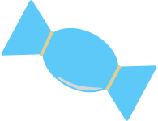
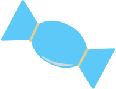
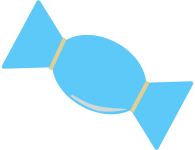

Game
About
Info
To make ramen happy:
+1 pt
when you catch
and  before falling into ramen
-1 life
when you don’t catch them on time!
-1 pt
when you catch ‘good’
ingredient
Make sure ramen is well fed!
 and  before falling into ramen
and  before falling into ramen